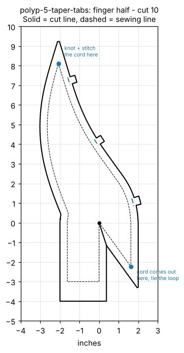
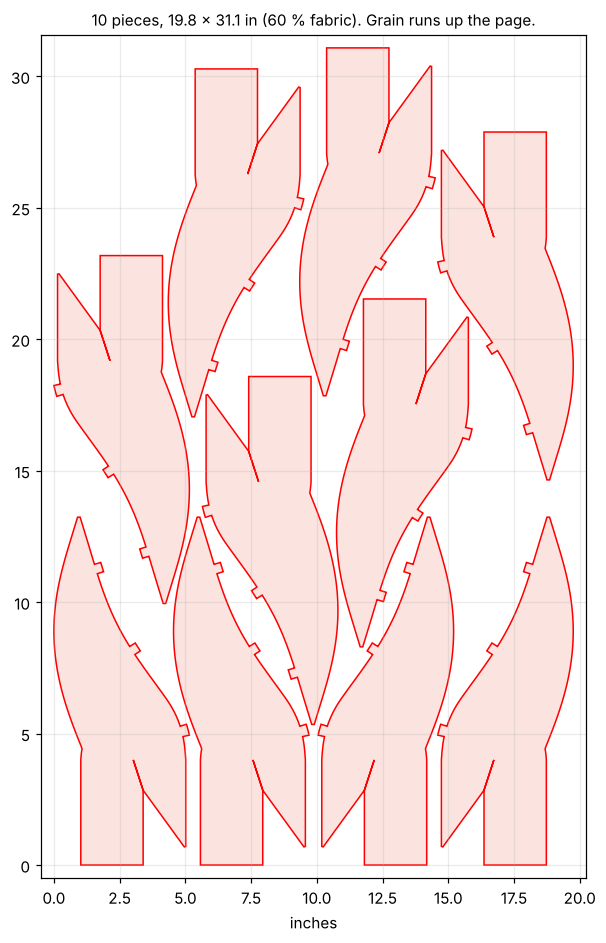
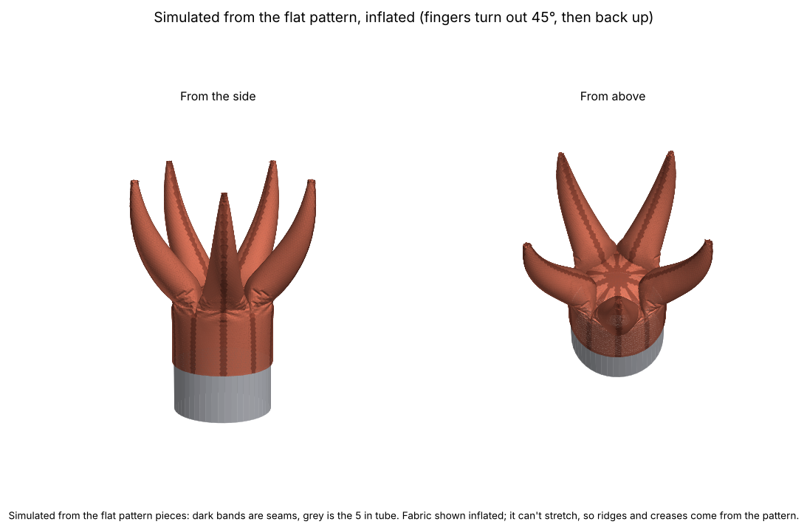
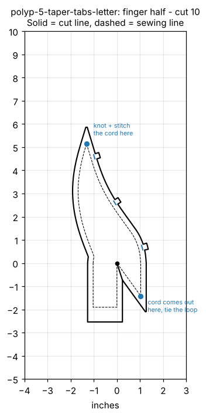

One finger half, cut 10. Solid line is the cut, dashed is the sew line, blue marks the 3 string tabs on the inner seam (5/8 in allowance at each tab, sewn closed 1/4 in out).

Laser sheet: all 10 pieces nested, cut lines only. The grain runs up the page.

Cloth simulation of the sewn polyp with air in it. The tunnel and cord are not drawn here.

A one-off 64 % scale model of the same design: cuff diameter 3.275 in (fits a 3.17 in tube), 5.4 in fingers, cut piece 3.3 x 8.4 in. It prints on one landscape letter page. Print at 100 % and check the 1 in square, then cut 10 (5 mirrored pairs).

Set it up once. After that the simulator is always one link away, and it pulls my latest changes with one button.
([ -d ~/coral-simulator ] || git clone https://github.com/RemyOP-LTL/Inflatable-Coral.git ~/coral-simulator) && cd ~/coral-simulator && git fetch origin && git checkout claude/polyp-string-fingers && git pull && bash polyps/fabric-pattern/install-mac.sh